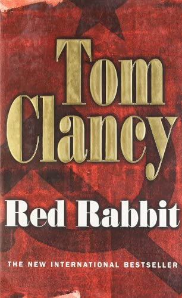

Author: Tom Clancy
Audio read by: Derrick Hagon
Country: United States
Language: English
Series: Jack Ryan
Genre: ThrillerSpy fiction,Historical fiction
Publisher: G.P. Putnam's Sons
Publication date: August 5, 2002
Media type: Print (Hardcover, Paperback), Audio
Preceded by: Patriot Games
Followed by: The Hunt for Red October
Introduction
Red Rabbit is a spy thriller novel, written by Tom Clancy and released on August 5, 2002. The plot occurs a few
months after the events of Patriot Games (1987), and incorporates the 1981 assassination attempt on Pope John Paul
II. Main character Jack Ryan, now an analyst for the Central Intelligence Agency, takes part in the extraction of a
Soviet defector who knows of a KGB plot to kill the pontiff. The book debuted at number one on The New York Times
Best Seller list.[1]

Characters
Oleg Ivanovich Zaitzev: Communications officer in the Committee for State Security, later a conscience defector to
the United States (known in the CIA lexicon as "Rabbit")
Jack Ryan: Central Intelligence Agency liaison to the Secret Intelligence Service
Yuri Vladimirovich Andropov: KGB chairman
Colonel Boris Andreyevich Strokov: Bulgarian KDS intelligence officer working for the KGB
Ed Foley: CIA chief of station in Moscow, under cover as embassy press attaché
Mary Pat Foley: CIA operative, Ed Foley's wife
Sir Basil Charleston: Chief of the Secret Intelligence Service
Simon Harding: SIS analyst who works directly with Ryan
Arthur Moore: Director of Central Intelligence
James Greer: CIA Deputy Director of Intelligence
Robert Ritter: CIA Deputy Director of Operations. Distrustful of Ryan, an analyst, taking part in field
operations.
Cathy Ryan: Clinical instructor in ophthalmic surgery on an exchange program at St. Guy's Hospital, London; Jack
Ryan's wife.
Plot Summary
In 1982, Pope John Paul II privately issues a letter to the communist Polish government, stating that he will resign
from the papacy and return to his hometown unless they cease their repression of counterrevolutionary movements in
Poland, particularly the Solidarity trade union. Called the Warsaw Letter, it was later forwarded to Moscow,
enraging Committee for State Security (KGB) director Yuri Andropov. He decides to plan for the pope’s assassination,
which he believes would reinvigorate Communism in Eastern Europe, perceived by many to be in a state of decline.
Known only by its designated number 15-8-82-666 for security reasons, the assassin is then selected as a Turk Muslim
(understood to be Mehmet Ali Ağca), who would then be eliminated by Bulgarian KDS officer Boris Strokov afterwards
for deniability. The operation was later unanimously approved by the Politburo.
Meanwhile, Oleg Zaitzev, a communications officer in the KGB tasked with sending and receiving encrypted dispatches
to and from KGB stations across Europe, pieces together the plot to kill the pope, and becomes deeply troubled with
the prospect of murdering an innocent person for political purposes. He later decides to make contact with the local
CIA station chief Edward Foley as well as his wife and agent Mary Pat, intending to defect and then be extracted out
of the Soviet Union with his family, in exchange for providing information on the assassination plot as well as the
names of KGB deep-penetration agents in the American and British governments.
The Foleys instruct Zaitzev to bring his family to Budapest, Hungary under the guise of taking a vacation. They are
then to be assisted by British Secret Intelligence Service (SIS) officers stationed in the city, because the CIA
station there was compromised; as a result, Jack Ryan, former Marine and the CIA liaison to SIS back in London, was
sent there to represent the agency. One early morning, the Zaitzevs were spirited out of the hotel they were
staying. Accompanied by Ryan, they are then smuggled to Yugoslavia, where they immediately fly to the United
Kingdom. By then, SIS agents had planted dead bodies that are physically identical to the family into their hotel
room, which was then set on fire, thus deceiving the KGB.
After settling down in a safehouse outside Manchester, Zaitzev reveals what he knows about the assassination plot,
which alarms the SIS and the CIA. Ryan was later sent to St. Peter's Square in Vatican City to accompany the British
SIS officers on the ground to ascertain how the hit on the pope will play out, as well as to try capturing the
shooter. At the pope's weekly audience, Ryan manages to capture Strokov; however, the Pope gets shot anyway by the
real shooter Ağca. Nevertheless, the pontiff recovers from his wounds. It was then revealed that Strokov was
executed by the British as retaliation for murdering Soviet defector Georgi Markov on British soil four years ago.